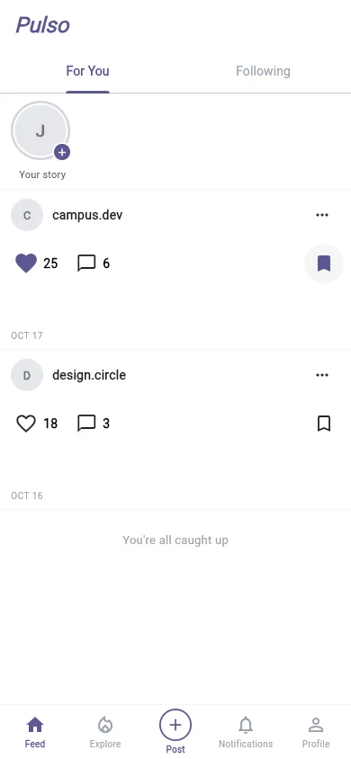
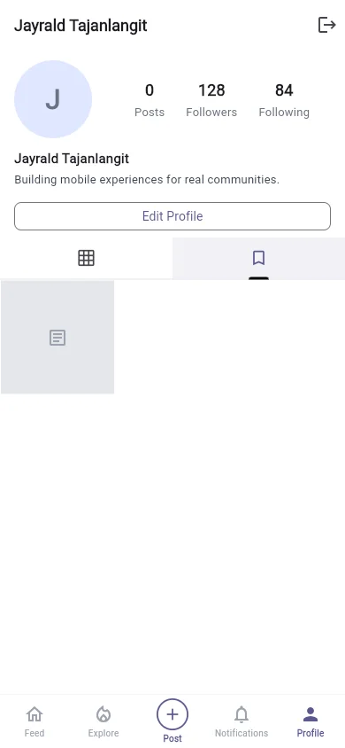

Project folio / 04 / Community products
Pulso
PurposeA Flutter community product centered on social posts, reactions, saved content, profiles, and realtime updates.
- Role
- Mobile and backend contributor
- Platform
- Mobile application
- Ownership
- Team project; Jayrald established the application foundation and built major social and realtime product features.
- Stack
- Flutter · Riverpod · Supabase · Realtime
 Real app capture
Real app capture
01
Problem
Give community interactions a responsive mobile experience backed by consistent authentication and realtime state.
A Flutter client uses Riverpod for application state and Supabase for authentication, persisted social data, and realtime changes.
02
My contribution
Built the Flutter scaffold, Supabase and Riverpod foundation, authentication, and major social, profile, saved-content, and realtime features.
Ownership boundary. Team project; Jayrald established the application foundation and built major social and realtime product features.
03
System view
-
Flutter interface
Presents the feed, reactions, saved posts, and profile surfaces.
-
Riverpod state
Coordinates session and feature state across the supported social workflow.
-
Supabase services
Handles authentication, persisted social data, and realtime changes.
-
Profile and saved views
Return a member to their identity and the posts they chose to keep.
04
Decision ledger
| Decision | Why | Tradeoff |
|---|---|---|
| Centralize feature state with Riverpod. | Feed, profile, authentication, and saved-content behavior share session and data dependencies. | Providers require deliberate boundaries so feature state does not become globally tangled. |
| Show only the supported feed-to-saved-content path. | That flow reflects implemented work that can be demonstrated honestly. | Unreleased direct messages are omitted even though messaging would broaden the product story. |
05
Workflow record
Genuine released Flutter UI captured with locally isolated in-memory sample data. The sequence demonstrates shipped feed, reaction, bookmark, and profile behavior without using live community content.
-
01 / 03
Browse the community feed.
Browse the Feed — the released mobile surface presents reactions and save actions in a compact, familiar reading flow. -
02 / 03
React to or save a post.

Like and save — isolated in-memory capture state confirms both interactions immediately while preserving the user's place in the feed. -
03 / 03
Review saved content from the profile.

Review Saved content — profile navigation returns the member to bookmarked posts through the released saved-content path.
06
Stack index
- Product surface
- Mobile application
- Implementation
- Flutter · Riverpod · Supabase · Realtime
07
Repository disclosure
Public team repository. Jayrald built the app foundation and major social, profile, saved-content, and realtime features; unreleased direct messages are not presented as shipped.
Open source repository